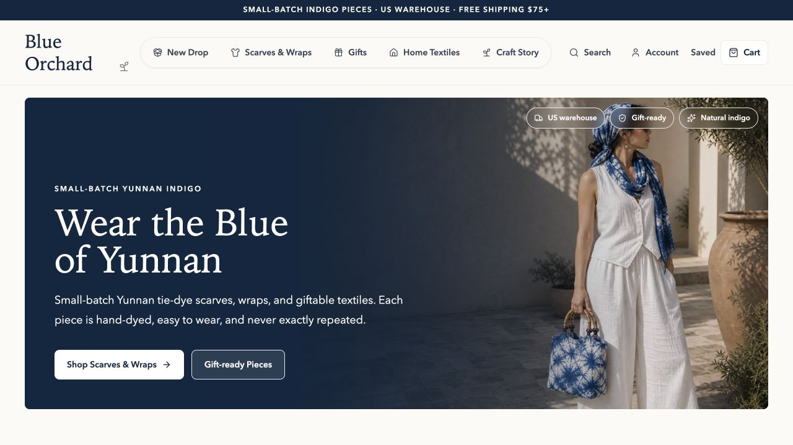

Blue Orchard
A storefront for Yunnan handmade textiles, from a persistent cart to server-side order handling.
- ROLE
- Independent developer
- TOOLS
- Next.js · TypeScript · Supabase · Stripe
- CONTEXT
- Jun 2026–present

What I built
I built the React/Next.js storefront with a Supabase catalog, a persistent browser cart, and Stripe Checkout integration.
The private codebase also contains signed webhook handling, order persistence, inventory reservations, cancellation paths, and fulfillment records. These are implementation details; this case study does not establish production reliability or transaction volume.
Cart to order
The browser keeps product identifiers and quantities. The server reads the catalog and calculates the payment line items, so a client-supplied price is not the source of truth.
The webhook handler verifies the raw request signature and maps payment events into order records. Checkout session identifiers connect repeated deliveries to the same order.
Retries and stock
The implementation gives payment events and order records stable identities. It uses keyed updates for orders and fulfillment records, and PostgreSQL functions with row locks for inventory reservation and release.
Inventory movement records make stock changes traceable. These individual mechanisms are useful, but they are not a proof of end-to-end exactly-once processing across payments, the database, and external services.